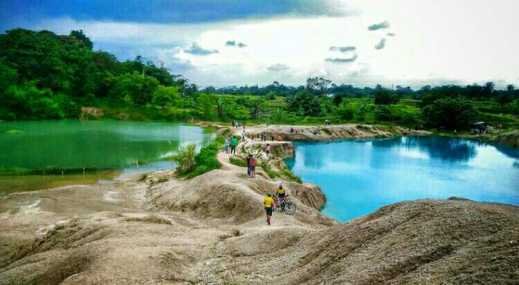

Kota Tangerang bisa dikatakan kota yang kecil, setelah terjadi pemekaran Tangerang Raya pada 1993 silam. Tangerang resmi memisahkan diri dari Kota Tangerang Selatan dan Kabupaten Tangerang. Kini, ketiga wilayah dengan nama Tangerang tersebut masuk dalam Provinsi Banten yang sebelumnya merupakan wilayah Provinsi Jawa Barat. Dalam buku "Melacak asal muasal Kampung di Kota Tangerang" yang ditulis Burhanudin (2018), nama Tangerang berasal dari kata "tangger" yang dalam bahasa Sunda memiliki arti "tanda". Tangger tersebut merupakan tanda batas kekuasaan kerajaan Banten abad 17 dengan pemerintahan Hindia Belanda. "Ada pula yang menyebut Tangerang berasal dari kata Tanggeran, daerah (tanda) yang dimaksud berada di bagian sebelah barat Sungai Cisadane," kata Burhanudin dalam buku tersebut. Kata kedua sebagai asal mula nama Tangerang adalah kata "perang" yang merujuk pada perjalanan sejarah perbatasan kesultanan Banten dengan Pemerintah VOC yang sering dijadikan medan pertempuran. Lama berselang, penyebutan Tangerang mulai berubah menjadi Tangerang saat wilayah tersebut mulai dikuasai Belanda. Wilayah tersebut kemudian dijaga oleh tentara Belanda yang berasal dari berbagai daerah, salah satunya dari Makassar yang tidak mengenal akhiran. Sehingga kata Tangeran berubah pelafalannya menjadi Tangerang. Penyebutan Tangerang kemudian diresmikan pada masa pendudukan Jepang oleh Kentyo M. Atik Seardi pada 27 Desember 1943. Tanggal tersebut menjadi hari jadi Kabupaten Tangerang hingga saat ini, sebagaimana dikukuhkan dalam Peraturan Daerah Nomor 18 Tahun 1984.
Geografi

Kota Tangerang terletak di bagian barat Provinsi Banten, berbatasan dengan Kota Jakarta di sebelah timur, Kabupaten Tangerang di sebelah selatan, Kabupaten Bogor dan Kabupaten Lebak di sebelah barat, serta Laut Jawa di sebelah utara. Kabupaten Tangerang merupakan salah satu daerah yang menjadi bagian dari wilayah Provinsi Banten. Kabupaten ini terletak tepat di sebelah barat DKI Jakarta. Pusat pemerintahannya berada di Kecamatan Tigaraksa. Total Luas Wilayah: Luas wilayah Kota Tangerang adalah 164,55 km², yang merupakan 1,59% dari luas Provinsi Banten. Kota Terbesar di Provinsi Banten: Kota Tangerang adalah kota terbesar di Provinsi Banten dan ketiga terbesar di wilayah Jabodetabek.
Wisata

